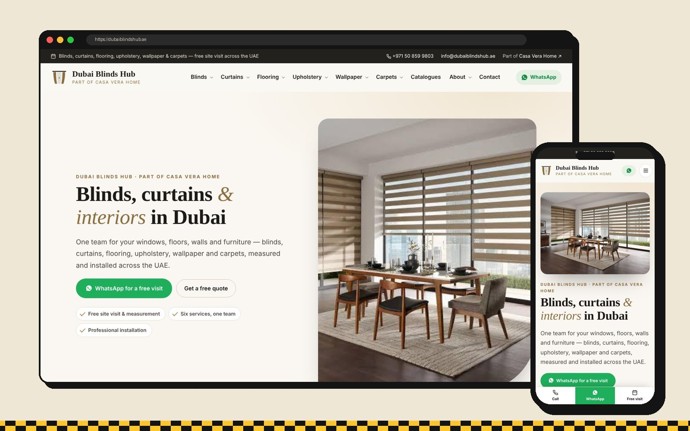

Sound familiar?
OUTGROWN YOURDIGITALPRESENCE?
A website that no longer fits
Hard to find online
A brand that's fallen behind
Who we work with
MUMBAI. INDIA.THE WORLD.
Denim State

Dubai Blinds HubBIGGER PLANSNEED THE RIGHTPARTNER.
How we work
Discover
Understand your business & goals
Plan
Strategy, structure & timeline
Build
Design, develop & launch
Grow
Measure, improve & scale
YOUR
BUSINESS
HAS BIGGER
PLANS.
Website
Visibility
BrandingAa
Enquiries
YOUR NEXTCHAPTERSTARTS HERE.
LET'S GROWYOUR BUSINESS.
GET IN TOUCH
DM US TO GET STARTED
bombaymarketing.in
@bombaymarketing.in